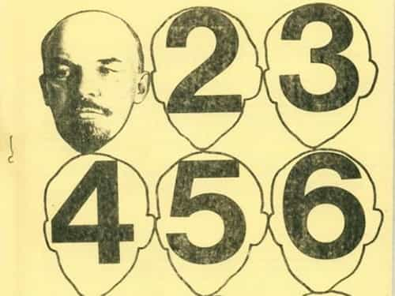

André is a young European who left his decaying country in 2012 for greener pastures. He enjoys exploring subterranean places, reading about a host of interconnected topics, and yearns for Tradition.


The left is intrinsically conflict-mongering. It always existed against a particular state of thing, whether real or fantasized. Early on, though, it dissimulated its conflictive essence by posing as positive or “progressive.” To this end, generations of leftists twisted language to give themselves a good appearance whereas the enemy-of-the-day looked to everyone like something really bad.
Eighteenth century libertines claimed to defend “freedom” while faith became “fanaticism” and “superstition.” Later ones came across as “intellectuals” or siding with “the people.” Some manipulated the proclivity to empathy to pretend they were “oppressed” and thus entitled to sympathy when they were actually hateful, anti-middle-class Marxist or deviant family-hating lesbians.
The whole theory of “progress” as one can find it in Marx—society ought to go from capitalism to an ideal communist society—is little more than wishful thinking, yet it worked tremendously for leftists eager to cast themselves into a self-favoring view of history. Marxist “progress” has been used to kill millions of innocent people, just like globalist or cultural Marxist “progress” serves to destroy white homelands. As long as people are entrapped into positive words masquerading and fostering grim realities, Leftism retains its grip over their minds.
Here are some pseudo-positive concepts or buzzwords that are actual ploys for sinister projects.

Perhaps the most massive totem pole of it all. Written, shouted, used as a talisman an indefinite number of times, “equality” has been put forth to justify various mass killings from eighteenth century terror to twentieth century Bolshevism, and closer to us served to unleash female hypergamy and alien millions of young straight-white-males from the societies they should belong in.
Equality exists in mathematics. A number can be equal to another because an abstract unit can be replaced with another abstract unit without change. Mathematical equality exists because abstract units are identical with each other. Outside from the realm of pure quantity, qualitative differences emerge, and thus equality ought to be defined negatively as the absence of difference both in quantity and quality.
It is easy to see that equality between individual beings—not numbers—is a fiction, an attempt to perceive individuals as abstractions or numbers, void of any quality, personality or specificity. Equalitarianism stems from a rather incomplete view of the beings it pretends to apply to, and gets quickly used as a mask for envy or the will to grab something or exert power over someone.
Although equality can enter into the definition of true justice as equanimity—see Aristotle’s Nicomachean Ethics, quote—, more than often, the word is used to foster particular interests at the expense of the wider social equilibrium, to fan the flames of division and sedition, and later, to deny vocations, human biodiversity, complementarity as it implies differences in nature and functions, not to mention ugly tradeoffs where some manipulative group plays the victim or claims rights to what doesn’t belong to them.
Are you a victim? Are you victim of a particular inequality? Then you are living an injustice, and this wrong ought to be compensated. This simple framing has been widely used by anti-white, anti-male, anti-Western leftists to create a feeling of victimhood among various social categories. They used this powerful feeling to mount new social identities, inspired from Marxist classes—feminism isn’t about femininity but about women identifying as a separate, adversarial group, whose interests would be antagonistic to men’s—, and perpetual charges hung over the majority’s heads—reyciss! Sexiss! And so on.
“Social justice” covers a blending of several features: an accusatory, anti-white, anti-male, anti-Western narrative, that taints and darkens past history; a feeling of victimhood and class identity for so-called “minorities” integrated into the wider narrative; the systematic, and very real, disenfranchisement and displacement of the majority that finds itself condemned to play the role of the bad guy—and hence charged—in said narrative. In this sense, “social justice” is deeply divisive, defamatory, aggressive, and amounts to a Moloch that eats families, nationhood, and most men.
Actual justice, call it social or not, is of course far from such a terrible conception. Methinks true justice should acknowledge the fact that we are the sons of the Western civilizations, its human substance and legitimate heirs, and that we have a prime right over it. We should have jobs, freedom of speech, protection over violent crowds, a right to fair judgment instead of getting screwed over by HR, “minority” impunity and pussy pass, a right to chances to thick relationships with at least some women instead of clowning our ways through hypergamy… Don’t forget we need to formalize at least some of our intuitions about what’s fair or not to replace the wicked theory of “justice” the Left shatters us with.
This overrated buzzword has been straightforward long ago. Its Latin root, progressus, stems from the root verb gradior (walk, advance) and was mostly used in a military context, as in the sentence “the army is progressing into enemy territory.” Since then, it has been used analogically to qualify any advancement, even purely relative or fantasised ones.
The Left, following pompous Philosophes and Marx, enshrined its own notion of progress into a general theory of history, thus making it absolute rather than relative. When various strands of modernity clash—for example, individual freedom and collective well-being—, which one is “progressive”? Each can be used to fulfill a particular notion of progress. Aside perhaps from blatant technological breakthroughs, “progress” is deeply relative. Even the most shining realizations of genius imply the sacrifice of thousands of potential choices that have been discarded during the process. The Left chose to forget this truth in order to judge everything and everyone from its own authoritarian, pedestalized perspective.
If you do some research about such characters as, say, Ayn Rand and Lothrop Stoddard, you’ll notice they have been widely labelled “reactionary.” Yet each of them was a progressive in his own right. Rand considered industrial development and individual freedom as obvious landmarks of progress: she opposed vehemently to the environmentalist and collectivist—that is, anti-industrial, anti-economic growth, anti-conservative rights—as a “return of the primitive.”
As for Lothrop Stoddard, he rebuffed Bolshevism and environmentalism as pre-scientific ratiocinations that willingly ignored human differences and the proper value of civilization. These “mistakes”, he said, are older than biological discoveries and stem from “degenerate” elements who would rather destroy civilization than letting it progress without them.
The only new thing about Bolshevism is its ” rationalizing ” of rebellious emotions into an exceedingly insidious and persuasive philosophy of revolt which has not merely welded all the real social rebels, but has also deluded many misguided dupes, blind to what Bolshevism implies. (Stoddard, Revolt Against Civilization, chap.8)
I also remember an old-fashioned Marxist who claimed feminism was “reactionary” because, he said, it comes from the wealthy and urbanized bourgeoisie, and hijacks the attention and care given to working classes for the benefit of actual exploiters. This guy’s progressivism has fallen out of grace, likely because it showed unable to destroy Western countries, but he is no less right according to his own logic.
Now, of course, we could say that MRAs are the real progressives as men’s rights are a progress, or that asserting our identities and associated rights are a progress, perhaps more so than SJW savagery and unrestrained hypergamy.
We all heard about how being “open to new ideas” and possibilities, or being “open-minded” was good. In practice, what the liberals mean when they talk about openness or open-minded is “be a Leftist and believe in our notion of progress.” You have to be uncritical, hyper-sympathetic towards the last tranny or BLM activist that whines about how mistreated and misunderstood he is—and if you are “open” to wasting your money on the latest trendy fashion, it is even better.
But try being open-minded towards what the Left tags as “far right” or “extreme”, for example men’s right, race realism, skepticism on their dogmas such as anthropogenic global warming, or tradition… and it won’t be long before they shriek at you, in a typical display of rather irrational dirtiness psychology. “These ideas are impure! They are contagious!”
Open-mindedness along their lines means being gullible to media and college propaganda. You have to let the managers and social engineers fabric your consent, as Chomsky would put it. They want your mind to be open so they can fulfill it with self-hate and garbage. When it comes to better things libtards suspend open-mindedness, to the point of refusing any objective inquiry and hiding behind their biased, accusatory rhetoric.
In itself, openness or open-mindedness is a double-edged sword. It can, and should be used by those who are intelligent or morally structured enough to toy with potentially dangerous ideas. As to the others, those who are too easily tempted or misdirect by demagogues, especially women—who by their vote always favoured an anti-family, economy-devouring Big State—, the low-IQ and the unhinged, I think they should follow the lead of more qualified individuals.
Since time immemorial peoples have been ethnocultural groups. Romans used the term natio to refer to a particular people, say, the Gaul, the Goths or the Basque. They also used the term civis to refer to a man as a member of his city, thus belonging to it.
Both words have been emptied of their substantial meaning. “Nation” is now mostly used to denote an abstract, bureaucratized State whom anyone can be a national if the bureaucrats hand him a stamped piece of paper. “Citizenship” refers to the pretense to identify with a particular public responsibility or to a world under globalist power: Leftists often claim to be “just citizens” or speak “in the name of the citizens of X place” when they are actually carrying cultural warfare. Remember when a bunch of hateful swindlers tried to rob Sherry Spencer, Richard Spencer’s mom, of her real estate by forcing her to sell it at a cheap price? Complacent media said they were just citizens, or that “the town” was doing it. Yeah, sure.
Citizenship today is a mean to virtue-signal when you are an urban elf. It has become empty, fictitious—it refers to a world of nowhere and more subtly to belonging to a globalist class that abandoned its actual fellow citizens or ethnic brothers long ago.
When they referred to actually good causes, such as trade unions maintaining a high standard of living for most workers and fostering a meritocratic middle-class, these words ringed well. Today, they seem to refer more to the unwarranted privileges of State officers—when theft through taxes and economic rent are presented as something “social.”
The heroic epic of “social achievements”, which conveniently forgets that there is no free lunch and that if a particular segment of population benefits much from them it must be at the expense of the others, covers a host of barely examined ill effects. When it is used to glorify the welfare State, it forgets how such a State tends to disintegrate organic social life by taking away charity or generosity, how it fosters a big parasitic and paternalist State, how it allows females to destroy their families, or how it attracts immigrants eager to get a check and imposes unfair burdens on the productive citizens—I’m thinking about, say, the middle classes who paid for Obamacare, not about cutting taxes for Monsanto.
From fake smiles and cute façades to seemingly innocuous buzzwords such as “you go girl”, “sex positivity” or “self-acceptance”—which sounds better than complacency—, the culture conflict-mongerers managed to push their disruptions and degeneration into normality. One step at a time, from actual normalcy to an alien nation, all this believing they were cool or on the good side of history.
Shatter the illusion by explaining what stands behind and unveil the inner vacuity or potentially polymorphous use of the word. May progress not be “progress” and may the mainstream view of justice not be the anti-white, misandric “social justice.” They aren’t smarter than we are, just more manipulative.
Read Next: 4 Leftist Propaganda Videos That Had Their False Narrative Called Out